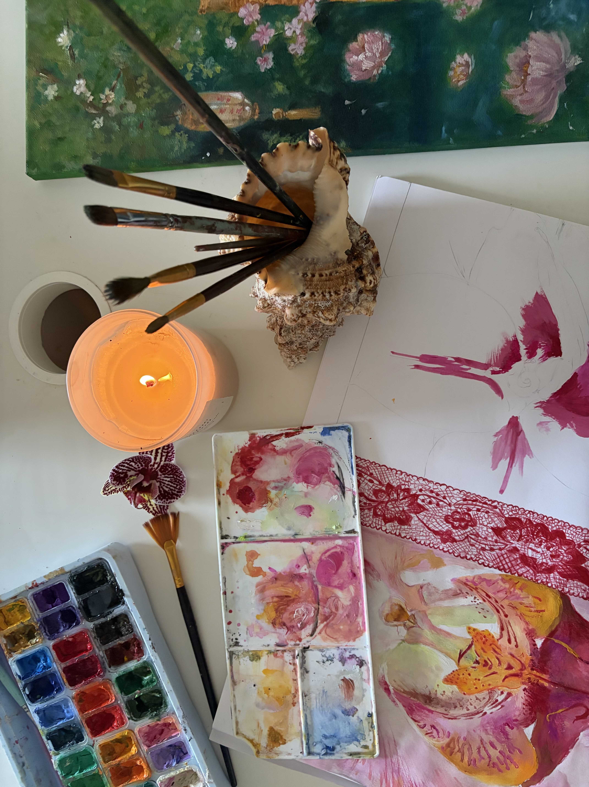

I'm a chemical engineering student, born in Kenya and now based in the UK. I've been making art for as long as I can remember.
My art is shaped by everyday encounters: conversations, music, books, phrases that stay with me, and, of course, nature, which often finds its way into my work.
My creative process is messy. I rarely begin with a fully formed image; a piece usually starts with a feeling and develops from there. Rather than recreate a reference exactly, I'm more interested in capturing how it makes me feel. When a piece takes an unexpected turn, I tend to follow it rather than correct it, allowing the process to shape the final result.
I title my pieces only when they're finished, allowing the title to emerge from the work itself. I want each title to offer a glimpse of what a piece means to me, while leaving room for viewers to bring their own experiences and interpretations.
I also see this website as a work of art in itself—an ongoing project that will grow and change alongside my practice. I'm learning to code so I can have as much creative freedom and autonomy over it as possible. The intersection of art and technology has always intrigued me, and building a space for my work feels like another extension of the work itself.
For enquiries and commission requests, please reach out to me via email at | shanellemokaya@gmail.com